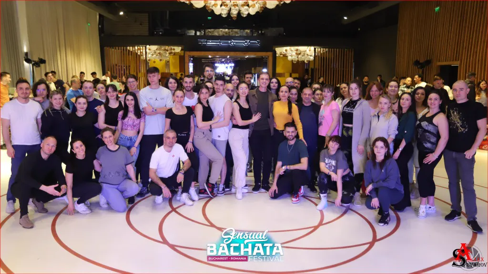
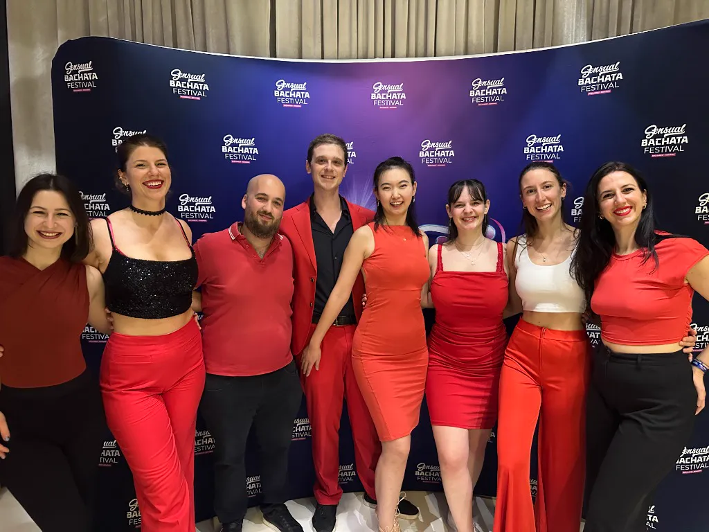

Zürich ist eine lebendige Stadt, aber die richtigen Hobbys zum Leute kennenlernen zu finden, kann manchmal eine Herausforderung sein. Wenn du Freizeitaktivitäten in Zürich suchst, die dynamisch, international und unglaublich herzlich sind, bist du hier genau richtig. Es ist der perfekte Zeitpunkt, ein neues Hobby zu beginnen, das dich nicht nur aktiv hält, sondern dir auch hilft, neue Leute zu treffen und deinen sozialen Kreis zu erweitern.
Bei AXcent Dance glauben wir, dass Verbindung das Herzstück von allem ist, was wir tun. Unsere Schule ist speziell darauf ausgerichtet, die Lücke zwischen dem Erlernen einer neuen Fähigkeit und dem Knüpfen lebenslanger Freundschaften zu schließen. Ob du ein Einheimischer oder ein Expat bist, unsere Bachata-Kurse in Zürich Altstetten bieten eine einzigartige Umgebung, in der soziale Interaktion ganz natürlich geschieht.
Die besten sozialen Hobbys in Zürich
Bei der Suche nach den besten sozialen Hobbys in Zürich achten die meisten auf drei Dinge: eine niedrige Einstiegshürde, ein gemeinsames Interesse und eine beständige Gruppe von Menschen. AXcent Dance erfüllt all diese Kriterien und ist damit eines der Top-Hobbys für Expats in Zürich, die sich von Grund auf ein soziales Leben aufbauen möchten.
Echt international
Unsere Schule ist voll von internationalen Menschen aus der ganzen Welt. Es ist der Schmelztiegel der Zürcher Sozialszene, in dem Kulturen auf der Tanzfläche aufeinandertreffen.
Kurse auf Englisch
Du musst dir keine Sorgen um Sprachbarrieren machen. Unser gesamter Unterricht findet auf Englisch statt, sodass jeder problemlos folgen und teilnehmen kann.
Über 100 aktive Studenten
Wir sind eine blühende Gemeinschaft mit über 100 Studenten. Du wirst jede Woche bekannte Gesichter sehen und neue Freunde finden. Falls du einen Platz für deine eigene internationale Begegnung suchst, kannst du bei uns einen Tanzraum mieten in Zürich Altstetten.

Kein Partner? Kein Problem!
Ein weit verbreiteter Irrtum ist, dass man einen Partner braucht, um mit dem Tanzen zu beginnen. Bei AXcent Dance kommt jeder alleine. Wir wechseln während des Unterrichts häufig die Partner, was das Geheimnis unserer engen Gemeinschaft ist. Es ist eines der effektivsten Solo-Hobbys in Zürich, um Leute ohne den Druck eines traditionellen sozialen Umfelds kennenzulernen. Egal, ob du nach Hobbys für Singles suchst oder einfach nur dein Netzwerk erweitern möchtest, Bachata ist die Antwort.
Wenn du einen Anfänger-Guide suchst, machen wir dir den Einstieg unglaublich einfach. Du kommst einfach vorbei, und wir kümmern uns um den Rest. Du wirst überrascht sein, wie schnell du Leute wiedererkennst und dich als Teil der Familie fühlst.

Gesundes Hobby für das soziale Leben als Expat
Bachata zu lernen ist nicht nur ein guter Weg, um Menschen kennenzulernen; es ist auch sehr förderlich für deine körperliche und geistige Gesundheit. Es ist ein Spaß-Hobby in Zürich, das dich in Bewegung hält, Stress abbaut und dein Selbstvertrauen stärkt. Außerdem hört unsere Gemeinschaft nicht an den Studiotüren auf. Wir reisen oft alle gemeinsam zu Festivals und Kongressen, sodass dein soziales Leben als Expat in Zürich nie langweilig wird.
Schau dir unsere kommenden Events an, um zu sehen, wohin wir als Nächstes reisen, oder lies über die Wurzeln von Bachata, um die Leidenschaft hinter der Bewegung zu verstehen.
Werde Teil der AXcent Familie
Es ist Zeit, dein neues Hobby zu beginnen und deine neuen besten Freunde in Zürich zu treffen. Keine Erfahrung oder Partner erforderlich.
PROBESTUNDE BUCHEN